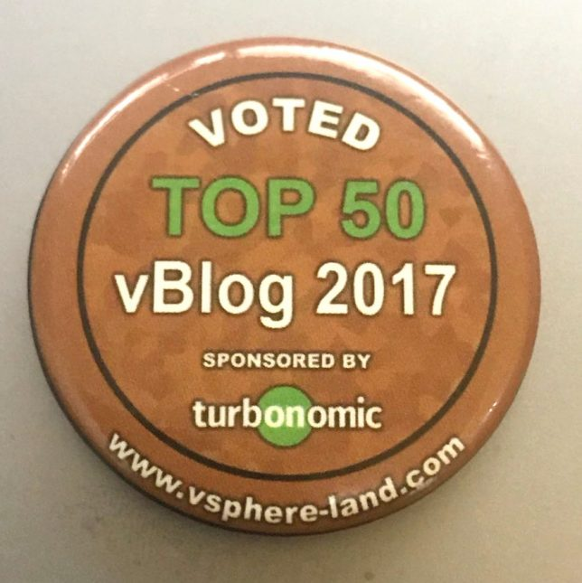

vSphereLand Top vBlog 2018
#vCommunity Blog VMwareCompartilhe esse post nas redes sociais...
Olá Homelabers!
Como todos os anos, o Eric Siebert (@ericsiebert) do blog vSphere-Land.com promove a votação dos Top vBlogs. Ele já postou em seu site que a votação deve começar em breve e quem quiser participar,** deve inscrever seu blog** no vLauchPad (o maior repositório de blogs sobre virtualização do mundo).
Se o seu blog ainda não está lá, não perca tempo. Registre o seu blog agora mesmo.
Para estar elegível na votação, você deve ter no mínimo 10 posts publicados em 2017. Assim como em 2017, a pontuação para definir o Top vBlog 2018 será:
80% - votação pública - votação geral - qualquer um pode votar - os votos são computados e ponderados para pontuação de classificação. 10% - número de postagens em um ano (2017) - quanto esforço o blogueiro colocou em posts ao longo de um ano de 2017 com base no trabalho árduo do Andreas 10% - pontuação do Google PageSpeed - até que ponto o blogueiro trabalhou para criar e otimizar seu site conforme avaliado pela ferramenta PageSpeed do Google (veja esse post)
Novidades para 2018
* Um teste opcional - **vKnowledge** - ao final da votação dando aos eleitores a chance de ganhar vales-presente da Amazon. Este teste é patrocinado pela [Nutanix](http://nutanix.com/) (@nutanix) e contará com perguntas para ver o quanto você sabe sobre a comunidade de virtualização e curiosidades sobre a história da virtualização.
* O resultado será revelação ao vivo, pela Internet na VMworld US. Teremos convidados especiais, um mestre de cerimônias e muito mais para torná-lo um evento divertido.
Ano passado blog Homelaber Brasil ficou em 42º na classificação geral e em 2º na categoria NON-English Blog. Fui o melhor Brasileiro classificado. Entrando assim para o Top50 pela primeira vez. Um feito e tanto para um blog do Brasil e que não produz conteúdo em Inglês.

Então, ficou animado? Então não perca a oportunidade de participar. A idéia é se divertir, conhecer novas pessoas da comunidade e divulgar o seu trabalho. Vai lá, eu te garanto que você não vai se arrepender! Precisamos de mais Brasileiros mostrando a cara lá fora!
E para finalizar, deixo aqui o meu agradecimento público a Nutanix e a Turbonomic que patrocinam o Top vBlog 2018 e apoiam a comunidade.
Você tem um blog? Vai se registrar? Deixe ai nos comentários!
Compartilhe esse post nas redes sociais...Valdecir Carvalho
Nerd e pai orgulhoso da Mariana e João. Profissional Sênior de TI com foco em arquitetura de infraestrutura e cloud computing. Blogueiro, podcaster, palestrante, amante de comunidades técnicas, fotógrafo aposentado e adora jogos antigos.
#vExpert · #VMUGLeader · #VUGBrasil · #vBronwBagBrasil · #VeeamVanguard